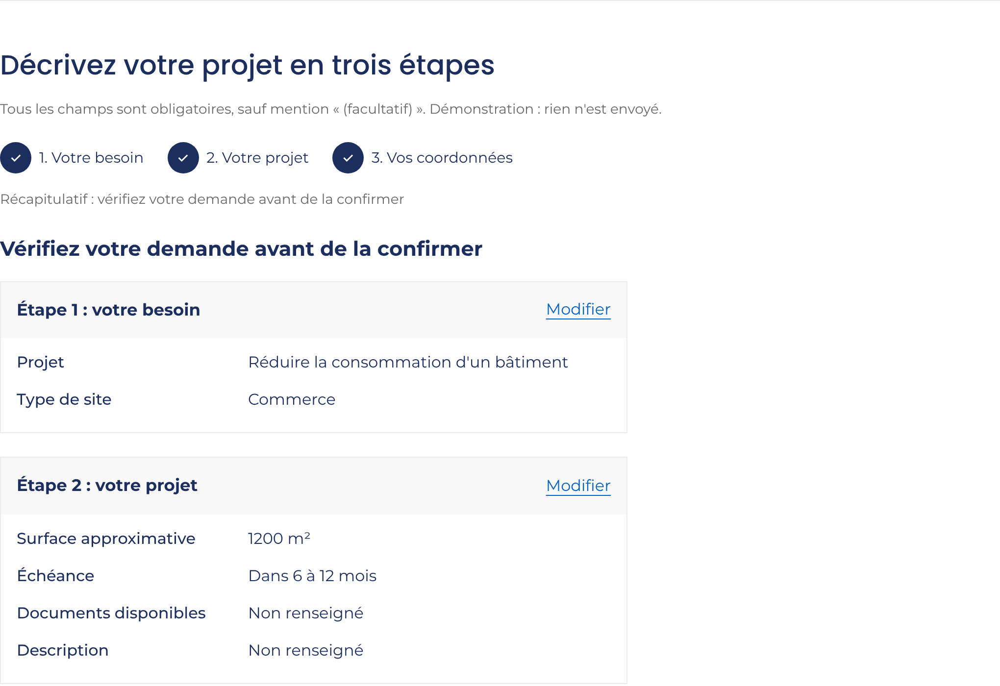
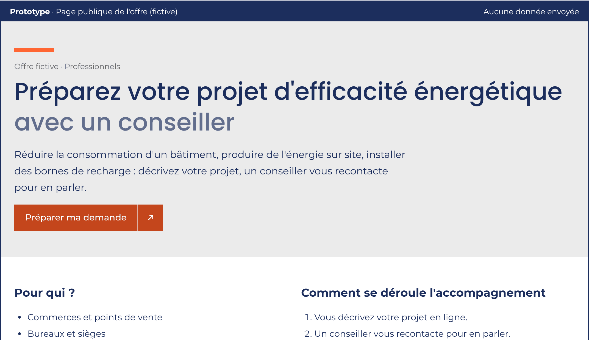
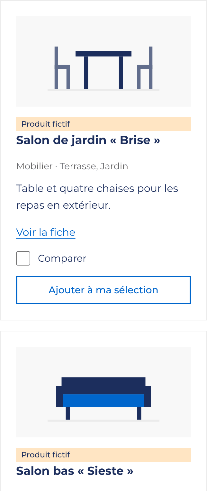
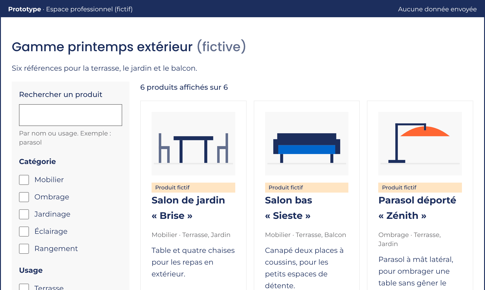

Cas 1 · Énergie
Transformer une visite en demande qualifiée
Un professionnel veut comprendre l'offre et préparer un échange avec un conseiller.
- Fiche offre
- Formulaire en 3 étapes
- Webinaire LinkedIn
- Tests et A/B test
- SEO/GEO
- RGAA
Concept exploratoire réalisé dans le cadre d'une candidature, sans lien avec SIPLEC ni E.Leclerc. Données fictives.
Candidature · Responsable projets marketing digital
Je conçois et pilote des dispositifs digitaux B2B qui transforment une visite en demande commerciale : UX avec les agences, RGAA, SEO/GEO, performance, équipe et budget.



Cas 1 · Énergie
Un professionnel veut comprendre l'offre et préparer un échange avec un conseiller.

Cas 2 · Non-alimentaire
Un acheteur de magasin doit comparer une gamme saisonnière et préparer sa sélection.
Fiche offre : cible, promesse, canaux, rôle des commerciaux.
Voir la fiche offreÉvénements GA4, Hotjar, tickets Jira, design system.
Voir les indicateursBalises, données structurées, roadmap et suivi des assistants IA.
Voir la stratégieRépartition indicative : elle ne suppose rien de l'organisation réelle de SIPLEC. Budget suivi chaque mois (engagé, facturé, reste à engager), sans montants dans ce portfolio.
Comment l'IA m'a aidée : j'ai utilisé Claude Code, Gemini et ChatGPT pour explorer, prototyper et vérifier (contrastes, audit automatisé, références RGAA). Les choix UX, marketing et éditoriaux sont les miens.